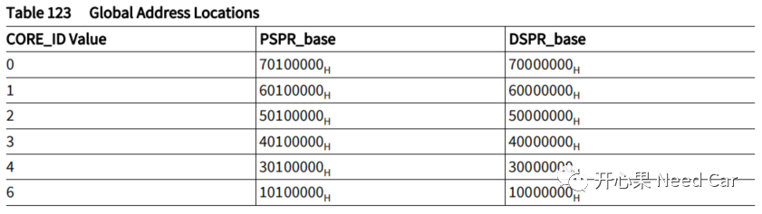
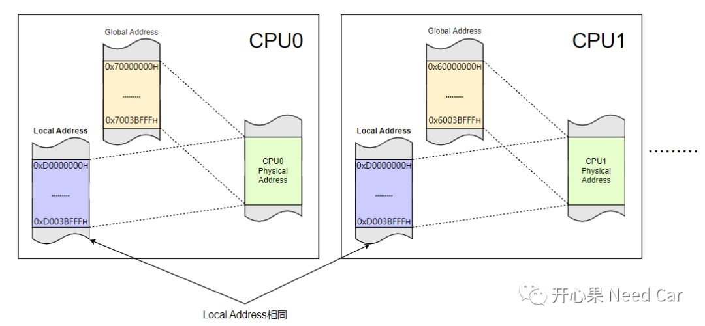
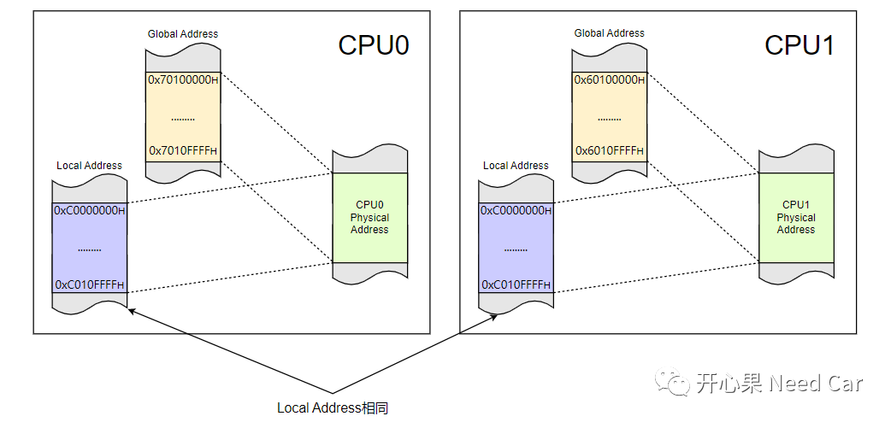
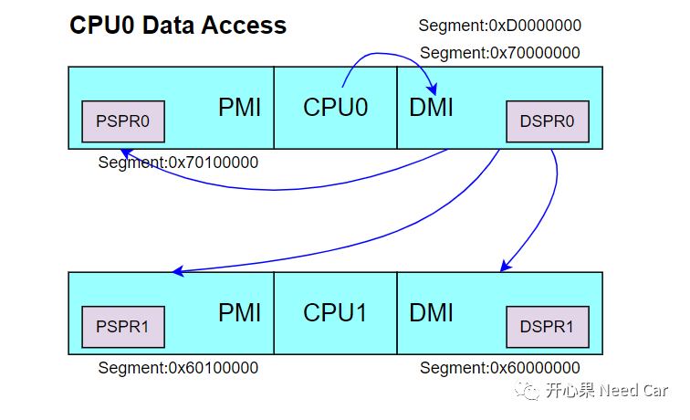
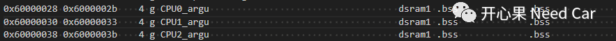
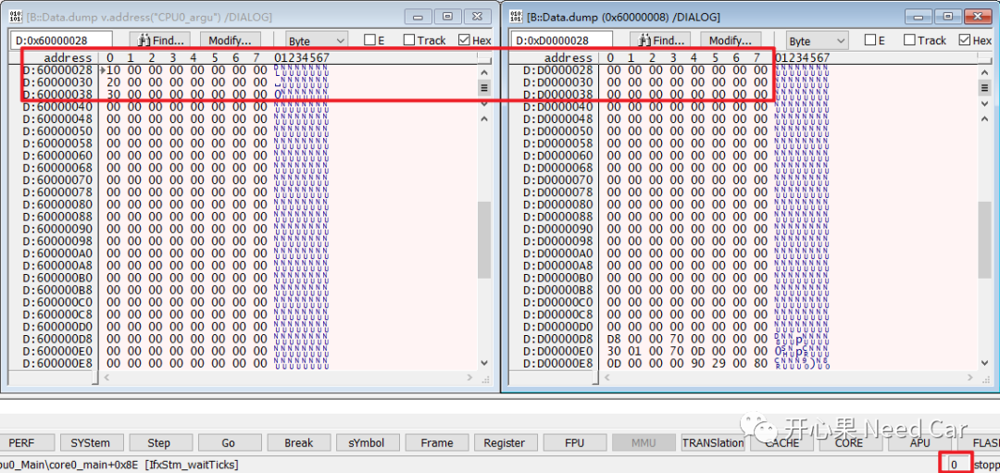
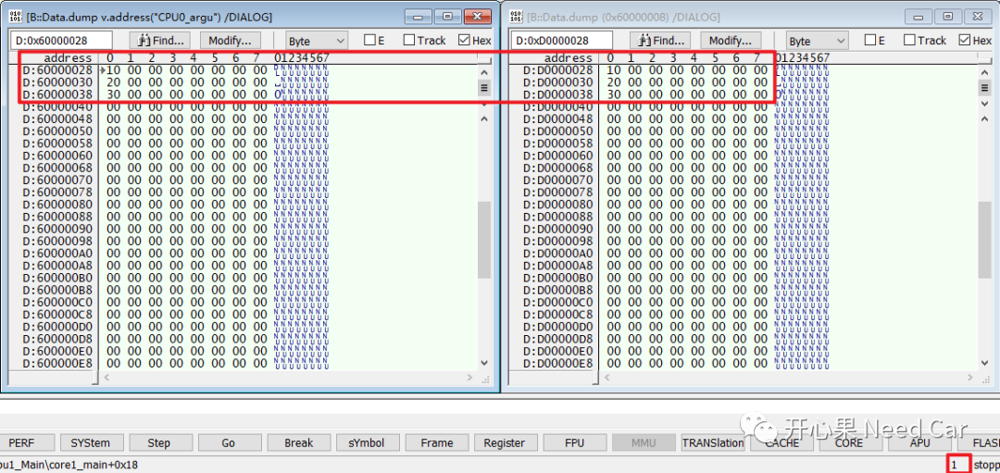
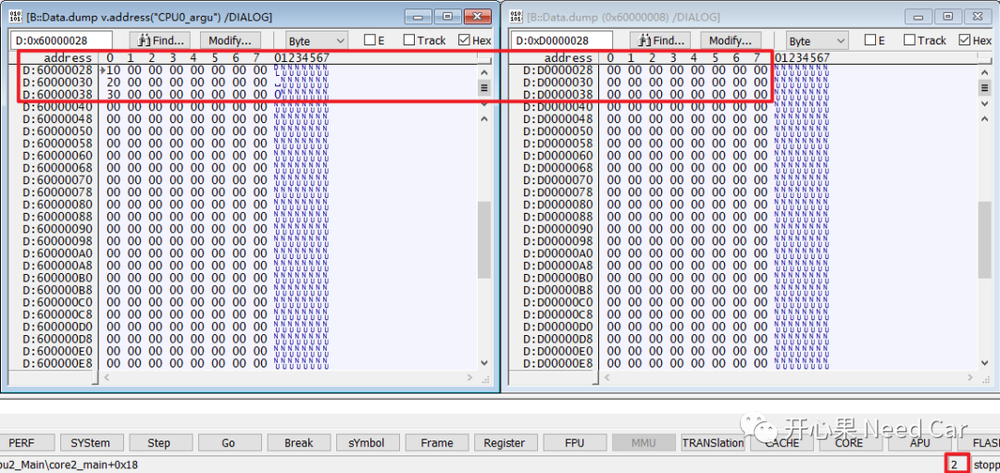

开心果 Need Car · 2023-05-27T08:01:00+08:00 · 微信原文
在TriCore架构中，SRAM（Static RAM）又分为PSPR（Program Scratch Pad RAM）和DSPR（Data Scratch Pad RAM），对于PSPR和DSPR又细分为Local PSPR/DSPR和Global PSPR/DSPR。如何理解Local和Global呢？
1、PSPR和DSPR地址划分

TriCore多核架构中，要求CPU之间数据/指令访问通过全局地址访问，也就是上述Global基地址开始的有效访问空间。而对于每个CPU的本地数据，可以使用Local地址访问，也可以使用Global地址访问。
（一）CPU数据访问
如下图，CPU0访问数据的有效全局地址空间为0x70000000~0x7003BFFF（240KByte），这块地址空间就是Global；而访问本地有效地址空间为0xD0000000~0xD003BFFF（240KByte），这块地址空间就是Local，而这两个逻辑地址空间对应同一块物理地址空间。CPU1访问数据的有效全局地址空间为0x60000000~0x6003BFFF（240KByte），访问本地有效地址空间也是0xD0000000~0xD003BFFF（240KByte），而这两个逻辑地址空间也对应同一块物理地址空间。

如上图可以看出，对于每个CPU，访问Local地址空间时，地址虽然一样，但是彼此之间不能直接访问，只能本地CPU访问。
（二）CPU指令访问
如下图，CPU0访问指令的有效全局地址空间为0x70100000~0x7010FFFF（64KByte），访问本地有效地址空间为0xC0100000~0xC010FFFF（64KByte），而这两个逻辑地址空间对应同一块物理地址空间。而CPU1访问全局数据的有效全局地址空间为0x60100000~0x6010FFFF（64KByte），访问本地有效地址空间为0xC0100000~0xC010FFFF（64KByte），而这两个逻辑地址空间也对应同一块物理地址空间。

2、数据的Global地址访问理解
如下图，CPU0如果想访问CPU1中的数据，只能通过读取CPU1的Global地址获取，而不能通过Local地址获取，因为CPU0和CPU1两者的Local地址一样，如果访问Local地址，CPU0只能读取到本地数据，而不是CPU1的数据。

3、Local和Global的映射操作
MEMORY{dsram2_local (w!xp): org = 0xd0000000, len = 120Kdsram2 (w!xp): org = 0x50000000, len = 120Kpsram2 (w!xp): org = 0x50100000, len = 24Kdsram1_local (w!xp): org = 0xd0000000, len = 120Kdsram1 (w!xp): org = 0x60000000, len = 120Kpsram1 (w!xp): org = 0x60100000, len = 24Kdsram0_local (w!xp): org = 0xd0000000, len = 112Kdsram0 (w!xp): org = 0x70000000, len = 112Kpsram0 (w!xp): org = 0x70100000, len = 24Kpsram_local (w!xp): org = 0xc0000000, len = 24K......}/* map local memory address to a global address */REGION_MAP( CPU0 , ORIGIN(dsram0_local), LENGTH(dsram0_local), ORIGIN(dsram0))REGION_MAP( CPU1 , ORIGIN(dsram1_local), LENGTH(dsram1_local), ORIGIN(dsram1))REGION_MAP( CPU2 , ORIGIN(dsram2_local), LENGTH(dsram2_local), ORIGIN(dsram2))
4、数据的local和global访问示例


如上可以看出，CPU0_argu、CPU1_argu、CPU2_argu数据存储到CPU1的全局RAM区域，CPU0只能通过CPU1的global地址获取数据，访问local数据时只能访问到CPU0的本地数据，访问不到CPU1本地的CPU0_argu、CPU1_argu、CPU2_argu。
（二）CPU1访问CPU0_argu、CPU1_argu、CPU2_argu结果如下所示：


往期精彩回顾
TRACE32调试：基础调试技巧之SystemMode、SNOOPer
Bootloader开发：为什么需要SBL（Secondary Bootloader）?
Autosar EcuM：APP由RUN到POST_RUN浅析